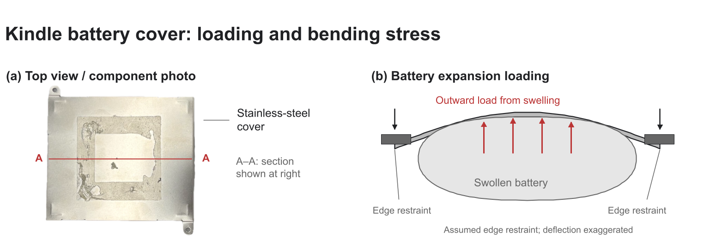
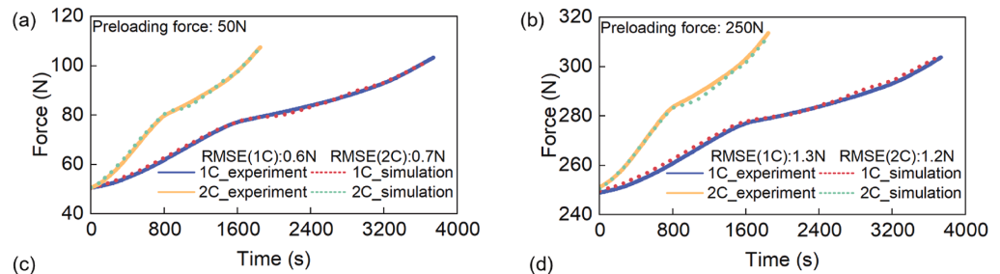
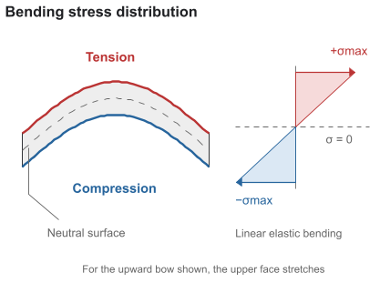
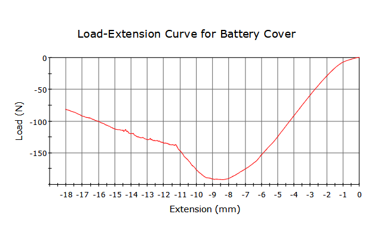

The battery cover
A quarter-millimetre of stainless steel
Behind the screen, a thin metal plate holds the lithium-ion battery in place. It has two jobs: shield the battery from impacts, and keep a swelling battery from pushing into the rest of the device or into the user's hand.


Identifying the alloy
We clipped a tab off the cover and scanned it with XRF. It is mostly iron, with large amounts of chromium and nickel and a little manganese, which is the signature of an austenitic stainless steel. Comparing our numbers with the alloy data in Ansys Granta EduPack, the closest match is 301 stainless steel.
| Element | Measured (wt.%) | 301 SS spec (wt.%) |
|---|---|---|
| Fe (iron) | 74.4 | 70.8–78 (balance) |
| Cr (chromium) | 16.8 | 16–18 |
| Ni (nickel) | 6.2 | 6–8 |
| Mn (manganese) | 1.7 | 0–2 |
| C (carbon) | not detectable by XRF | 0–0.15 |
The chromium is what makes it stainless. It forms a thin, self-healing chromium oxide film on the surface, which gives 301 excellent resistance to water and humidity and moderate resistance to acids and alkalis. That matters for a part sitting on a battery inside a device people carry everywhere.
Mechanical properties
| Property | Value |
|---|---|
| Hardness (measured) | 308 HV |
| Young's modulus | 189 GPa |
| Yield strength | 758 MPa |
| Flexural strength | 696 MPa |
| Elongation at fracture | 16.5% |

A hardness of 308 HV is high for an austenitic stainless steel. That suggests the sheet was cold-worked (rolled or formed at room temperature), which 301 is designed for. As Figure 3 shows, 301 has a large strain-hardening region: every bit of plastic deformation makes it stronger. That lets manufacturers roll very thin sheet that is still stiff and strong.

Use phase
What happens when the battery swells?
In normal use the battery barely pushes on its cover. The worst case is an ageing or damaged lithium-ion cell that swells as gas builds up inside, pressing outward on the middle of the cover while the screws and edges hold it in place.

How hard does a swelling battery push? One study measured the force from swelling lithium-ion cells and found the force rising by roughly 50 N or more above its starting preload, whether that preload was 50 N or 250 N (Figure 5). We used 50 N as a reasonable estimate of what our cover has to resist.

Testing it: three-point bending
We modelled this load as flexure. The cover is supported near its two ends and pushed at the centre, so its outer face stretches (tension) while its inner face squeezes (compression). We reproduced this on an Instron universal testing machine as a three-point bend test.



Maximum bending stress at 50 N (flat-sheet model)
σmax ≈ 1.4 GPa, nearly twice the 758 MPa yield strength.
If the cover were a flat 0.25 mm sheet, a swelling battery would bend it permanently. By the same equation, a flat sheet would start to yield at only about 27 N.
Our real cover held about 185 N in the Instron before it gave way, roughly seven times more. The difference is the 2.44 mm bent walls around its edges. Like the flanges on an I-beam, they move material away from the neutral axis, which raises the moment of inertia far more than adding thickness would. The designers got a stiff, protective cover out of very little steel by bending its edges up.
End of life
How hard is it to take back apart?
Before the cover can be recycled as clean stainless steel, everything stuck to it has to come off. Here is how our teardown went:
- Pry off the Kindle's outer plastic case.
- Remove the two screws holding the battery cover to the chassis.
- Separate the lithium-ion battery from the cover, which it is bonded to with adhesive.
- Peel the black foam pad off the cover. Underneath is a thin plastic film, which also peels off by hand.
- Wipe off the leftover adhesive with ethanol.


Peeling foam tape takes up to about 35 N [3], easily done by hand. The real stress state is complicated, with tension in the adhesive and some twisting. To estimate the stress in the steel, we assumed the peel force pulls along the face of the cover, which loads its cross-section in simple tension:
Stress in the cover during peeling
About 0.3% of the yield strength: purely elastic, and the steel springs back unharmed.
Taking the cover apart barely loads the steel at all. And since the steel is going to be melted down, a little bending wouldn't matter anyway.
The battery cover is easy to recycle: two screws and a peel. It would be even easier without the adhesive. The bent walls and screws already hold the battery in place, so the glue mostly adds a cleaning step (and a solvent) between the device and a clean stream of stainless steel.
Sources
- Force evolution of swelling lithium-ion batteries, ScienceDirect. sciencedirect.com/science/article/pii/S2773153725001343
- Peel force of adhesive foam tape, Force Channel. force-channel.com
- Ansys Granta EduPack, record for AISI 301 stainless steel (composition and mechanical properties).
- Flexure formula, Engineering Core Courses. engineeringcorecourses.com